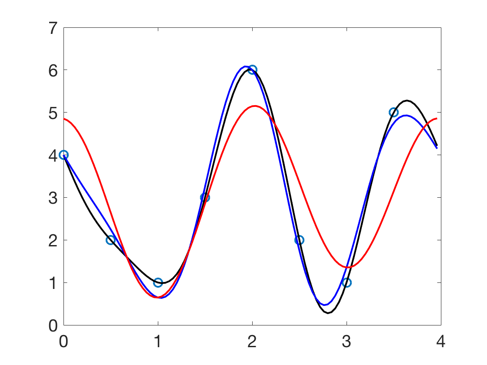

Additional Examples 10.3
1 (a) Find the best least squares approximation to data (0,1), (1,4), (2,2), (3,3) using basis functions 1 and \(\cos \frac{1}{2}\pi t\) on \([0,4].\) (b) Add \(\sin \frac{1}{2}\pi t\) and find the best least squares approximation.

(a) The DFT is
\[ \frac{1}{2}\left[\begin{array}{rrrr}
1&1&1&1\\1&-i&-1&i\\1&-1&1&-1\\1&i&-1&-i
\end{array}\right]
\left[\begin{array}{r}
1\\4\\2\\3
\end{array}\right]=
\frac{1}{2}\left[\begin{array}{c}
10\\-1-i\\-4\\-1+i
\end{array}\right]=\left[\begin{array}{c}
5\\-\frac{1}{2}-\frac{1}{2}i\\-2\\-\frac{1}{2}+\frac{1}{2}i
\end{array}\right]
\]
Corollary 10.12 shows the complete interpolating polynomial to be
\begin{eqnarray*}
p_4(t) &=& \frac{a_0}{\sqrt{4}}+\frac{2}{\sqrt{4}}\left[a_1\cos \frac{2\pi t}{4}-b_1\sin \frac{2\pi t}{4}\right] +\frac{1}{\sqrt{4}}a_2\cos \frac{4\pi t}{4}\\
&=& \frac{1}{2}5-\frac{1}{2}\cos \frac{2\pi t}{4}+\frac{1}{2}\sin \frac{2\pi t}{4}+\frac{1}{2}(-2)\cos \pi t\\
&=& \frac{5}{2}-\frac{1}{2}\cos \frac{1}{2}\pi t+\frac{1}{2}\sin \frac{1}{2}\pi t - \cos \pi t.
\end{eqnarray*}
Using the first two terms gives the solution to (a), which is \( \frac{5}{2}-\frac{1}{2}\cos \frac{1}{2}\pi t. \)
(b) The first three terms give the solution \( \frac{5}{2}-\frac{1}{2}\cos \frac{1}{2}\pi t+\frac{1}{2}\sin \frac{1}{2}\pi t.\)
2 Use dftfilter.m to plot the order 4, 6, and 8 least squares trigonometric approximation functions for the following data.
\begin{array}{ccccccccc}
t&0&1/2&1&3/2&2&5/2&3&7/2\\
\hline
x&4&2&1&3&6&2&1&5
\end{array}
Using dftfilter.m with \(m=4, 6\) and \(8\) give the trigonometric approximation functions plotted below in red, blue, and black, respectively.
